SIMION Dielectric Examples
Purpose
These examples demonstrate solving electric fields in the presence of dielectrics. Also demonstrated are solving electric fields given floating conductors and solving current densities in space given conductivity of materials in space since these are solved by similar methods. See Dielectrics for general background.
These examples require SIMON 8.1.1.0 or above.
Theory - Parallel Plate example (plates_2dp.iob)
The plates_2dp.iob example calculates the electric field in a simple (idealized) infinite parallel plate capacitor with two dielectric materials in between. The conductive plates at x=0 mm and x=100 mm are held at 10 V and 0 V respectively. The region x < 50 mm has relative dielectric constant εr,left = 1 (e.g. perfect vacuum), and the region x > 50 mm is filled with some material with relative dielectric constant εr,right = 3.
Due to symmetry, this problem can be solved as a 1-D problem, though in SIMION a 2D planar array is used. The component of electrical displacement D perpendicular to the dielectric boundary is the same on both sides,
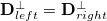
. Substituting , we determine that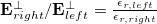
. In this case, the field on the right is three times the field on the left. The field within each dielectric region is uniform.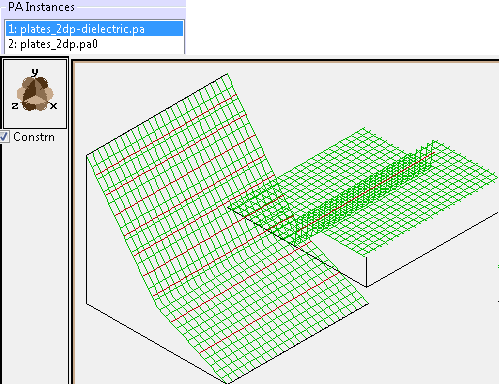
Figure: At bottom is a PE plot of the potentials with equipotential lines (red) from 0 to 10 V. At top is a plot of the dielectric constant over the same space (but with the plot shifted to the up so as not to overlap), where values are 1 (left) and 3 (right). The potential gradient is smaller where the dielectric constant is higher.
Theory - Dielectric Cylinder (cylinder_2dp.iob)
The cylinder_2dp.iob example determines the electric field of an infinitely (or very) long cylinder of dielectric material (ε1) inside an otherwise uniform electric field (E0 in the +x direction) defined by two far away conductive plates and dielectric material (ε2) everywhere else between them. This example is based on Griffiths Problem 4.22. The field inside the cylinder should be a uniform Ein = 2 E0 / (ε1/ε2 + 1).
This system can be defined with a Y mirror plane. There is also a Dirichlet condition on the X plane, although that presently is not utilized.
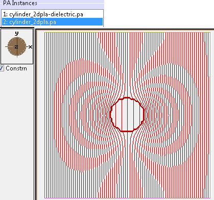
Figure: Potential contour lines as well as contours of dielectric constants in cylinder_2dp.png. Inside the electric field is uniform and lower then the field outside.
Theory - Dielectric Sphere (sphere_2dc.iob and sphere_3dp.iob)
These are like the previous example but the cylinder is replaced with a sphere. This example is taken from Griffiths Example 4.7. The field inside the sphere should be a uniform Ein = 3 E0 / (ε1/ε2 + 2).
This example uses 2D cylindrical symmetry (sphere_2dc.iob) or 3D planar symmetry with Y and Z mirroring (sphere_2dp.iob). There is also a Dirichlet condition on the X plane, although that presently is not utilized. For the 3D version, you will need to do a 3D zoom (e.g. on the x=0 plane) to properly see fields.
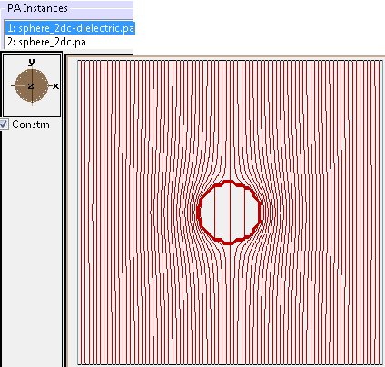
Figure: Potential contour lines as well as contours of dielectric constants in sphere_2dc.iob. Inside the electric field is uniform and lower then the field outside.
Theory - Floating Conductors (float_cylinder_2dp.iob)
This example demonstrates electric field calculation given a floating conductor. Floating conductors are not connected to electrical ground or a power supply (supply of charge) but rather are held in place by some insulative material. Therefore, the potential of the surface of the electrode surface, although unique, might not be initially known to you. As described in Floating Conductors, there are a couple ways to Refine with floating conductors. One way is to define the floating conductor as a dielectric with a infinite (or nearly infinite) dielectric constant. 100 or 1000 may do. The floating conductor will have zero total charge that way. You may, however, embed a certain amount of space-charge inside the floating conductor (it doesn't matter how that space-charge is distributed inside the floating conductor). This example is based on cylinder_2dp.iob.
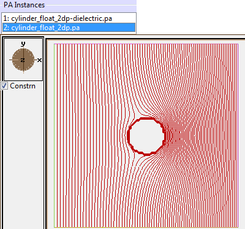
Figure: Equipotential lines for a floating conductor inside otherwise uniform electrode field generated by (non-floating) parallel plates (float_conductor_2dp.iob). A non-zero charge is also embedded on the floating conductor, which is why the field shown is not symmetric across X=0.
Theory - Non-linear Dielectric Cylinder (cylinder_nonlinear_2dp)
This example is similar to the Dielectric Cylinder example above except that the dielectric in the cylinder is non-linear. In a non-linear dielectric, the dielectric constant ε is a function of the local electric field E. Dielectrics further discusses non-linear dielectrics. Here, we'll assume that ε(E) = ε0εr(1 - λE2) for some constant λ. The magnitude of E is made very high in this example so that non-linear dielectric effects are apparent. For more comments, see also the Non-linear Dielectric Sphere below and [3].
Theory - Non-linear Dielectric Sphere (sphere_nonlinear_2dc.iob and sphere_nonlinear_3dp.iob)
This is similar to the above example but the cylinder is replaced with a sphere. The electric potential is as follows [1][2]:
V(r,θ) = -r cos(θ) E0 [ 3/(εr+2) + 27 εr λ E02(εr+2)-4 ], where r cos(θ) = y
The electric field, E = -grad V and corresponding ε(E) are easily derived from this.
Note that for the case θ=0 and λ=0, this simplifies to V(r) = -3r/(εr+2), and E(r) = -grad V(r) = 3/(εr+2), as noted for the Dielectric Sphere above.
In this example, the relative dielectric constant at zero fields is 6, and inside the entire sphere the field should therefore be uniformly 40.7E+3 V/mm, in which case the effective relative dielectric constant at local fields should be 5.206.
In simulating this, it can be important to have accurate field interpolations near dielectric boundaries. Dielectrics discusses the boundary field calculation accuracy issues some. Without this, field distortions near boundaries will cause dielectric constant distortions near boundaries, which in turn cause more field distortions, etc., and this error compounds if many iterations are run, as well as causes the solution to take hundreds of iterations to converge (thereby compounding the issue further). One solution for this, as done in sphere_nonlinear_2dc.lua (and sphere_nonlinear_3dp.lua), is to always sample fields at least one grid unit from the boundaries when updating dielectric constants from local fields. The effect of this change is shown in the figures below.
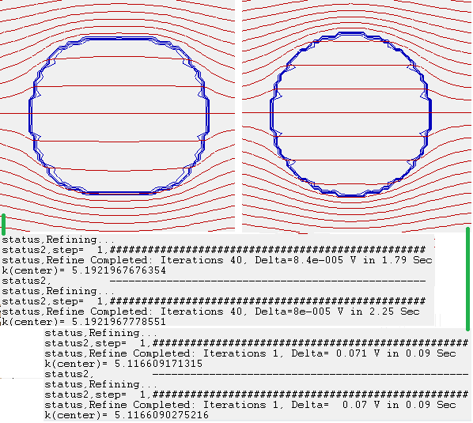
Figure: Potential (red) and relative dielectric (blue) contours. The relative dielectric constant at the sphere center across final iterations is shown in the Log. On left, we show the solution without improvement to field calculations near dielectric surfaces, where the dielectric surface slowly receded and the solution converged only after hundreds of iterations (note: the surface distortion is small at earlier iterations). On right, we show the solution with an improvement to field calculations near dielectric surfaces, which does not show distortions, and it converges much faster (k(center)=5.12)--in only about 20 iterations convergence is clear.
Theory - Dielectrics with Charge (charged_dielectric_2dp.iob)
This example demonstrates a situation where both dielectric constants and space-charge are varied in space.
The 1-D Poisson equation is
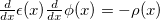
. Let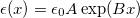
and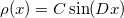
. This linear second-order nonhomogeneous differential equation can be solved by the variation-of-parameters method to get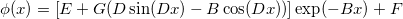
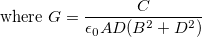
Subject to boundary conditions,
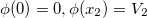
and letting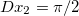
, we obtain constantsE = G B - F
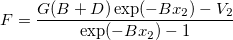
Also, in the limit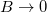
(i.e. uniform dielectric constant),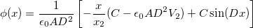
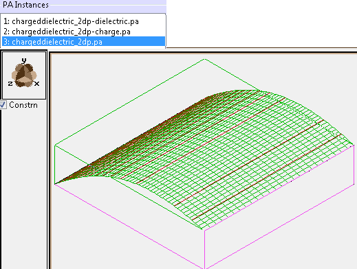
Figure: PE view. Potential in center exceeds potentials on end electrodes due to space-charge. Potential gradient on right tapers off due to increasing dielectric constant.
Another example utilizing both dielectrics and space-charge (merely for the purpose of simulating a charged floating conductor) is the float_cylinder_2dp.iob above.
Theory - Current Density from Conductivities (resistive_2dp.iob)
This example doesn't contain dielectrics but rather uses the same mathematics in order to solve the current density in space given an arbitrary distribution of conductivity (σ(x,y,z)) through space and electric potential boundary conditions. Here, σ rather than ε is provided to the Poisson solver. See Current Density for general details on using the Poisson solver for current density problems.
This example resembles two resistors connected in series. Conductivity outside the resistor is made nearly zero (but it cannot be zero). The resistive material is given a uniform conductivity, but the bottom resistor is defined with four times the cross-sectional area. Therefore, as confirmed in this simulation, the bottom resistor has approximately (ignoring fringe fields) 1/4 the current density as the top resistor (since current flux is conserved). Conductive electrodes are added to the top and bottom to generate the potential difference.
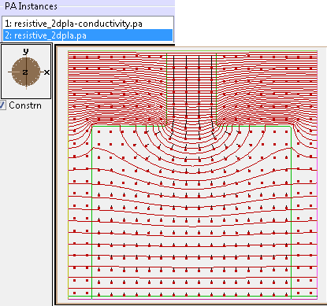
Figure: Potential contour lines (red) and current density vectors (black lines with dots). The boundary between low (outside) and high (inside) conductivity regions is outlined in green (0.5 contour line). The magnitude of current density decreases as the conductor width widens at the bottom since current flux is conserved.
Files in this demo:
- README.html - description of examples
- plates_2dp.iob - electric field of dielectric material slab
between parallel electrode plates. (2D planar)
- plates_2dp.gem - geometry definition of electric potential PA (two parallel plates)
- plates_2dp-dielectric.gem - definition of dielectric PA
- Optional:
- plates_2dp_solve.lua - Alternative batch mode program to solve this system.
- plates_2dp_solve2.lua - Another alternative batch mode program, building PA's with PA API rather than GEM files.
- cylinder_2dp.iob - electric field of cylinder of dielectric material inside an
otherwise uniform field. (2D planar, Y)
- cylinder_2dp.gem - geometry definition of electric potential PA (two parallel plates)
- cylinder_2dp-dielectric.gem - definition of dielectric PA
- Optional: cylinder_2dp_solve.lua - Alternative batch mode program to solve this system.
- sphere_2dc.iob - similar to cylinder_2dp.iob but with the cylinder replaced with a sphere. (2D cylindrical)
- sphere_3dp.iob - similar to sphere_2dc.iob but modeled with a 3D array. (3D planar, YZ)
- float_cylinder_2dp.iob - electric field of floating conductive cylinder inside an
otherwise uniform field. (2D planar)
- float_cylinder_2dp.gem - geometry definition of electric potential PA (two parallel plates) (these are conductors with fixed potentials as usual)
- float_cylinder_2dp-dielectric.gem - definition of dielectric material PA (uses high dielectric constant to model conductor with floating potential)
- cylinder_nonlinear_2dp.iob - electric field calculation of cylinder of non-linear
dielectric material. This requires an iterative, self-consistent solution. (2D planar)
- cylinder_nonlinear_2dp.gem - geometry definition of electric potential PA (two parallel plates)
- cylinder_nonlinear_2dp-dielectric.gem - definition of dielectric PA at zero fields.
- cylinder_nonlinear_2dp-dielectric2.gem - generates dielectric PA, originally empty, which the user program will fill with current values of dielectrics based on the previous PA and locally calculated electric fields. This PA (not the previous one) is fed to the Poisson solver.
- cylinder_nonlinear_2dp.lua - This performs a series of Refines in order to obtain a self-consistent solution. The electric field and dielectric constants, which depend on each other, are calculated alternately for a number of iterations.
- sphere_nonlinear_2dc.iob - similar to cylinder_nonlinear_2dp.iob but using a sphere rather than a cylinder. Also improves field accuracy near the dielectric boundary. (2D cylindrical)
- sphere_nonlinear_3dp.iob - similar to sphere_nonlinear_2dc.iob but modeled with a 3D array (3D planar, YZ)
- charged_dielectric_2dp.iob - electric field calculation where both the
dielectric constant and space-charge vary in space. (2D planar)
- charged_dielectric_2dp-dielectric.gem - GEM file to build PA for dielectric. Initially empty (filled in later by user program).
- charged_dielectric_2dp-charge.gem - GEM file to build PA for space-charge. Initially empty (filled in later by user program).
- charged_dielectric_2dp.lua - workbench user program to solve field (upon Fly'm) and compare results to theory. Dielectric and space-charge parameters can be controlled by adjustable variables.
- resistive_2dp.iob - solves current density given conductivity and electric potential boundary conditions.
This doesn't use dielectrics but is solved in the same manner as a dielectric problem.
- resistive_2dp.gem - generates electric potential PA. Defines electric potential boundary conditions.
- resistive_2dp-conductivity.gem - defines PA representing material conductivity throughout space.
- resistive_2dp.lua - solves and plots field upon Fly'm.
PA and GEM File Definition
Most of the GEM files in these examples have an underscore in the PA type
field in the pa_define (e.g. electric_).
This marks the PA as not refinable in the usual way:
It prevents SIMION from prompting you to automatically refine the PA with
the Laplace solver when you load the IOB, which otherwise could clear or
corrupt PAs used to store dielectric constants or potentials that
depend on dielectric effects.
This option is described in
Doc(gem_geometry_file).
This option cannot be effectively used with fast adjustable arrays though
(e.g. plates_2dp.gem, which generates plates_2dp.pa#, uses no such underscore).
Using this demo:
Using plates_2dp.iob:
- 1. Load plates_2dp.iob. (Click View on the main screen and select this IOB file.) . Say Yes to build/refine the electric PA (plates_2dp.pa0). Initially, this is will not take dielectric effects into account. The user program will properly refine with dielectric upon Flym. The field will not be correct until you Fly'm.
- 2. Click Fly'm. This will refine the plates_2dp.pa0 using the dielectric constants stored in plates_2dp-dielectric.pa. The potential array representing electric potentials (plates_2dp.pa0) is shown on the left, and the array representing relative dielectric constants (plates_2dp-dielectric.pa) is shown on the right. Although we could make these arrays overlap in space, in this example we shift the dielectric array to the right to allow easier viewing of both arrays simultaneously, which is ok to do because the Refine function here ignores the positioning of the dielectric PA in the workbench. You can use the mouse and standard PE/contour functions to view the dielectric constants in plates_2dp-dielectric.pa in the same manner you view potentials in plates_2dp.pa0. Here, the dielectric array contains points with relative dielectric constants 1 and 3 in the left and right regions respectively. In the PE view, notice that slope of the potential is smaller in the right region where dielectric constant is higher. You can measure the exact gradients with you mouse cursor in the XY View (we see 0.15 V/mm and 0.05 V/mm respectively), and as expected the ratio of these potential gradients and the ratio of the dielectric constants are both the same value (3).
- 3. Note that for a PA# file refined with dielectric effects, it is still valid to fast adjust the electrode potentials after refining. For example, from the "Fast Adjust Voltages" button the PAs tab, you may adjust the potentials of electrodes #1 and #2 in plates_2dp.pa0 to 0 and 5 respectively to reverse the direction of the field and reduce it by half. The dielectric effect will still be properly accounted for. (Technical note: dielectric effects are incorporated into all electrode solution arrays.) If, however, you want to change the dielectric constants, you will need to re-refine the array (see the next cylinder_2dp.iob example for one way to do this). There are a number of ways to edit the dielectric array, although it is not really currently practical to fast adjust the dielectric array, for a number of reasons. If using .PA#/.PA0 files, changing the dielectric requires re-refining the .PA# file since refining just the .PA0 file in memory is not sufficient. There are some special footnotes in plates_2dp.lua describing how this is done.
Using cylinder_2dp.iob:
- 1. Load cylinder_2dp.iob. (Click View on the main screen and select this IOB file.) Note: The PAs will not be refined and will not be correct until you Fly'm.
- 2. Click Fly'm. This will refine the cylinder_2dp.pa using the dielectric constants stored in cylinder_2dp-dielectric.pa.
- 3. To assist viewing, you may optionally disable display of the dielectric PA. (On the PA's tab, click each of the first to PA instances and uncheck the "Draw" checkbox next to it.) Unlike the previous plates_2dpl.iob example, here the electric potential and dielectric arrays overlap. (Note: if we were flying particles, it would be important that the electric potential PA have a higher priority number on the PA Instances list on the PAs tab by using the L-/L+ buttons, as is the case here, so that particles see the correct fields.)
- 4. The parameters of the dielectric can be controlled via the Variables tab. kinside and koutside are respectively the relative dielectric constants inside and outside the cylinder. Change koutside to 10 and kinside to 1, which makes the volume outside the cylinder have high permittivity and the volume inside a hollow vacuum cavity, and click Fly'm to re-refine the PA. Notice that the field inside the sphere is still uniform but is now stronger than the field outside (smaller distance between potential contour lines). Change kinside to 100 and koutside to 1 to make the cylinder a very weak insulator and click Fly'm. Notice that no potential contour lines pass through the cylinder (nearly zero potential gradient). Also, the field lines, which would be perpendicular to the potential contour lines, would be perpendicular to the surface of a insulator like this (i.e. flux passes through). The field would be nearly the same if the cylinder were replaced with a conductive electrode at the same potential, an effect we'll revisit in the float_cylinder_2dp.iob example.
- 5. Change kinside to 1 and koutside to 100 and click Fly'm. Here, the cylinder is a strong insulator and the surrounding material is a very weak insulator. Since the bottom and top plates touching this weak insulator are held at different potentials, some current density (j) will flow through the weak insulator, by an amount proportional to the local electric field vector, j = σ E, where σ is the conductivity of the material. However, current will pass around the strong insulator (as you see, almost no electric field flux, which would be perpendicular to the potential contour lines, enters the cylinder). The "resistive_2dp.iob" example below explores calculation of current densities in more depth. The same mathematical technique to calculate electric fields through dielectric materials (ε) can also be applied to the calculation of current density through a semiconductive medium (σ).
Using sphere_2dc.iob:
- This is similar in usage to cylinder_2dp.iob.
Using sphere_3dp.iob:
- This is similar in usage to sphere_2dc.iob but it is a 3D example. You should do a 3D zoom into e.g. the x=0 plane to properly see potentials. (In XY view, mark a tall box containing x=0, click +Z3D and switch to the ZY view.)
Using float_cylinder_2dp.iob:
- 1. Load float_cylinder_2dp.iob (Click View on the main screen and select this IOB file.) Note: The PAs will not be refined and will not be correct until you Fly'm.
- 2. Click Fly'm. This will refine the float_cylinder_2dp.pa in the presence of the dielectric (float_cylinder_2dp-dielectric.pa), which is actually a cylinder with very high dielectric constant (100) to represent a floating conductor. These arrays are seen on the PAs tab. (Note: making the dielectric constant too high will slow down the refine.) The Refine also optionally incorporates a given space-charge inside the cylinder. This is controlled by the Q variable (in C) on the Variables tab. Notice in the Log window that the charge on the cylinder (5.0E-13 C/mm) is confirmed by a Gauss' law calculation (similar to Example: gauss_law).
- 3. Reduce the charge on the floating conductor to zero. (On the Variables tab, charge the C variable to 0 (Coulombs.)) Click Fly'm to re-refine. (This may take some time, and you can examine its progress on the Log window tab.) Notice that the fields are now symmetric in the vertical direction. The potential on the cylinder is 50 V, which is half-way between the potentials of the top and bottom electrodes, as we would expect. Some unwanted variation in potential (a fraction of a Volt) is noticed inside the cylinder, which perhaps can be reduced by increasing the dielectric constant and/or reducing the Refine convergence objective used in the code.
Using charged_dielectric_2dp.iob:
- 1. Load charged_dielectric_2dp.iob (Click View on the main screen and select this IOB file.) Note: The PAs will not be refined and will not be correct until you Fly'm.
- 2. Click Fly'm. This will populate the relative dielectric constants and space-charge densities in charged_dielectric_2dp-dielectric.pa and charged_dielectric_2dp-charge.pa respectively and use these to refine charged_dielectric_2dp.pa. These arrays are seen on the PAs tab. A comparison of actual v.s. theoretical potentials along the x axis is outputted to the log window, showing good agreement.
- 3. To assist in proper viewing, disable display of the dielectric and charge PA's. (On the PA's tab, click each of the first to PA instances and uncheck the "Draw" checkbox next to it.) Enable the PE view. The potentials near the center slightly exceed the potentials on the end electrodes (0 and 10 V) due to the space-charge, while the high value in dielectric constants on the right side causes the reduction in fields (i.e. low potential gradient) on the right.
- 4. The parameters of the dielectric and space-charge distribution (A, B' and C described in the Theory section above) can be controlled via the Variables tab. Change C to 0, which disables all space-charge, and click Fly'm. There is still a decrease in voltage gradient on the right side as dielectric constants increase to the right. However, the potentials nowhere exceed the end electrode potentials anymore. Furthermore, Change Bprime to 0, which makes the dielectric constant uniform over all space, and click Fly'm. Notice that the potential now has a uniform gradient, as we would expect with no-space charge and uniform dielectric constants. Furthermore, Increase A to 3, which changes the dielectric constant on the left to 3 (as well as everywhere else in space since Bprime is still 0), and click Fly'm. Notice that the potential has not changed. You may experiment with other values. For example, A=1, B=8, and C=-0.001 imposes a negative space-charge, causing potential to drop below zero near the center-left, and high dielectric constant on the right, causing a low potential gradient near the 10 V electrode on the right.
Using cylinder_nonlinear_2dp.iob:
- 1. Load cylinder_nonlinear_2dp.iob (Click View on the main screen and select this IOB file.) Note: The PAs will not be refined and will not be correct until you Fly'm.
- 2. Display the Log window tab and Click Fly'm. This will perform a series of refines in hopes to obtain a convergent, self-consistent solution, as described in the Theory section above. After each refine, the dielectric constants (cylinder_nonlinear_2dp-dielectric2.pa) are updated from the previously calculated electric fields, the graphical plot is updated (allowing you to see the potential contours change between iterations), and the dielectric constant at the center of the cylinder is printed to the Log. As seen, a stable convergence is reached. If desired, there is a "resume=1" adjustable variable allowing you to restart the iterations from the previous Fly'm. You may reduce the "convergence" adjustable variable on later iterations, but it should be kept high at earlier iterations to allow nonlinear dielectric effects to quickly take effect, thereby avoiding needless computation.
Using sphere_nonlinear_2dc.iob
- Usage of this is similar to cylinder_nonlinear_2dp.iob. As discussed in the Theory section, sphere_nonlinear_2dc.lua avoids sampling fields within one grid unit from the dielectric boundary to avoid field distortions causing distortions in dielectric constants near boundaries and poor convergence. With this correction, 20 iterations provides good convergence. Compare the "k(center)" value (effective relative dielectric constant at the sphere center based on local fields) to the Theory section above. Also note that the field inside the sphere should be uniform.
Using sphere_nonlinear_3dp.iob:
- Usage of this is similar to sphere_nonlinear_2dc.iob. The main difference is that this is 3D (like sphere_3dp.iob) and takes longer to run and converge.
Using resistive_2dp.iob:
- 1. Load resistive_2dp.iob (Click View on the main screen and select this IOB file.) Note: The PAs will not be refined and will not be correct until you Fly'm.
- 2. Click Fly'm. This will use Refine to solve the electric field (resistive_2dp.pa) given material conductivities throughout space (resistive_2dp-conductivity.pa). It will also calculate and plot the current density field, which is defined in the terms of the calculated electric field and given conductivities: j = σ. See comments on the screenshot of this example above. The current density vector field plotting is done via the contourlib81 library from Example: contour.
For further details, examine the source code of the .lua files for each of
these examples in a text editor.
These typically invoke the
Poisson solver
(pa:refine) and sometimes do other things.
References
- [1] W. Coffey, B. Scaife. "On the solution of some potential problems for a non-linear dielectric." Journal of Electrostatics, 1 (1975) 193-208.
- [2] A. Lloris, A. Prieto. "Numerical calculation of some potential distributions in non-linear dielectrics." Journal of Electrostatics, 13 (1982) 139-150. [3] K. Yu, P. Hui. "Effective dielectric response of nonlinear composites." Physical Review B. vol 46, no 21. 1 June 1993. 150-156.
Source/History
2012-01-05 - initial version, D.Manura